Tour de France
Création graphique & présentation d'équipes cyclistes

Le projet
Comme chaque été depuis maintenant plusieurs années, je regarde le Tour de France à la télévision et, quand je peux, je vais sur le tracé du Tour.
Pendant mon temps libre à vrai dire entre les entraînements et les compétitions
de tir à l'arc, le travail et les sorties à vélo, je ne savais pas vraiment comment m'occuper pendant ces vacances. J'ai donc essayé de refaire quelques cartes de coureurs en m'inspirant de ce que fait Panini, mais à ma façon.
Les cartes sont inspirées des maillots officiels des équipes.
Pour les concevoir, j 'ai utilisé des images du site officiel du Tour de France comme base visuelle, ainsi qu'Adobe Illustrator et Adobe Photoshop pour la création.


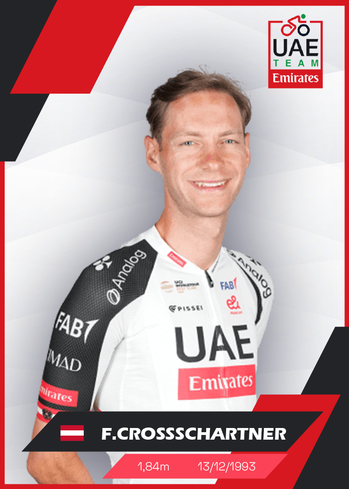
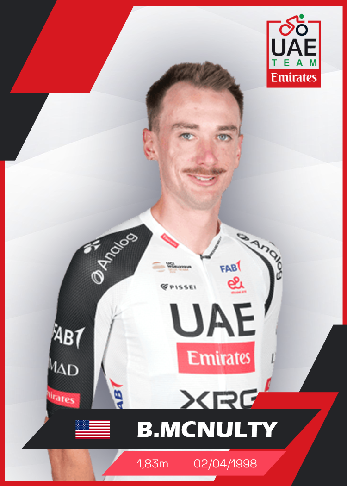
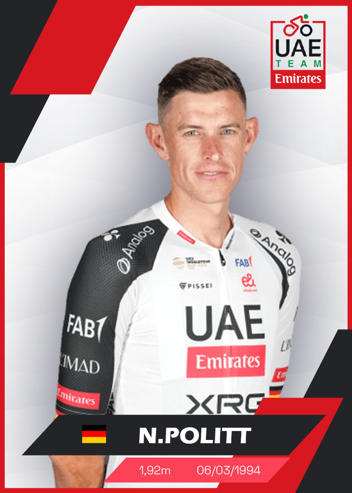
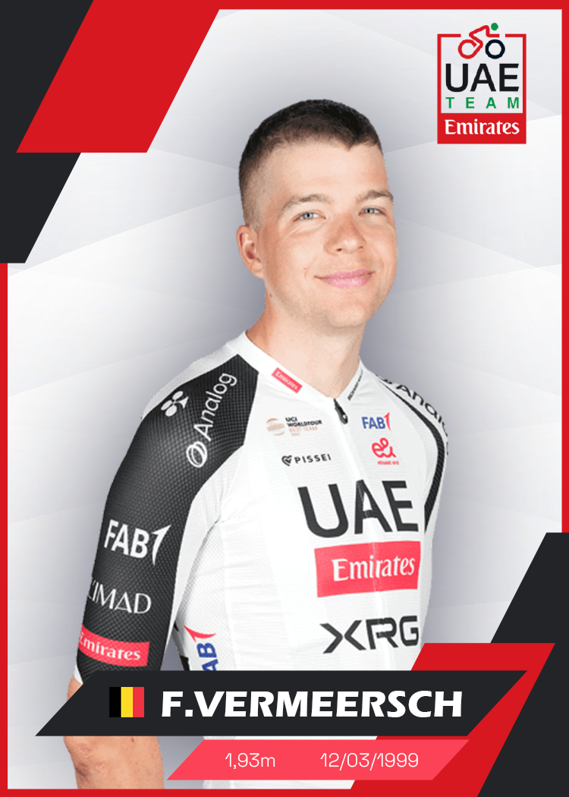
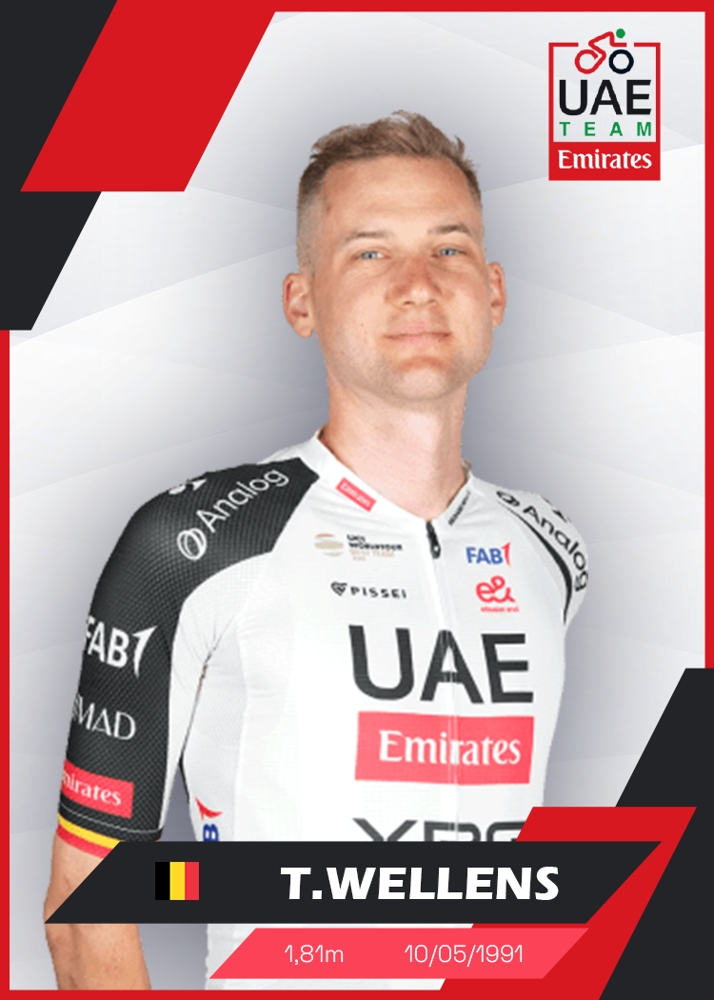
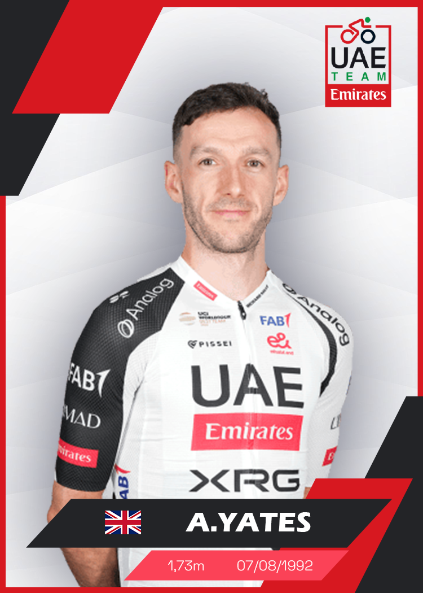
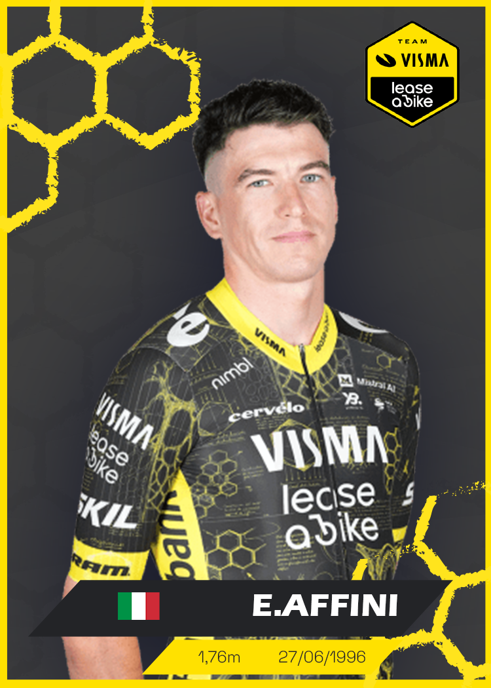
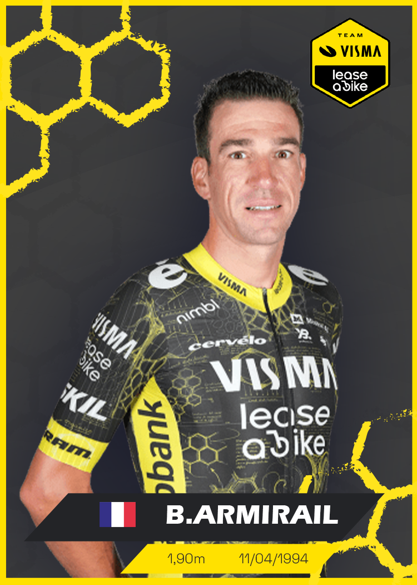
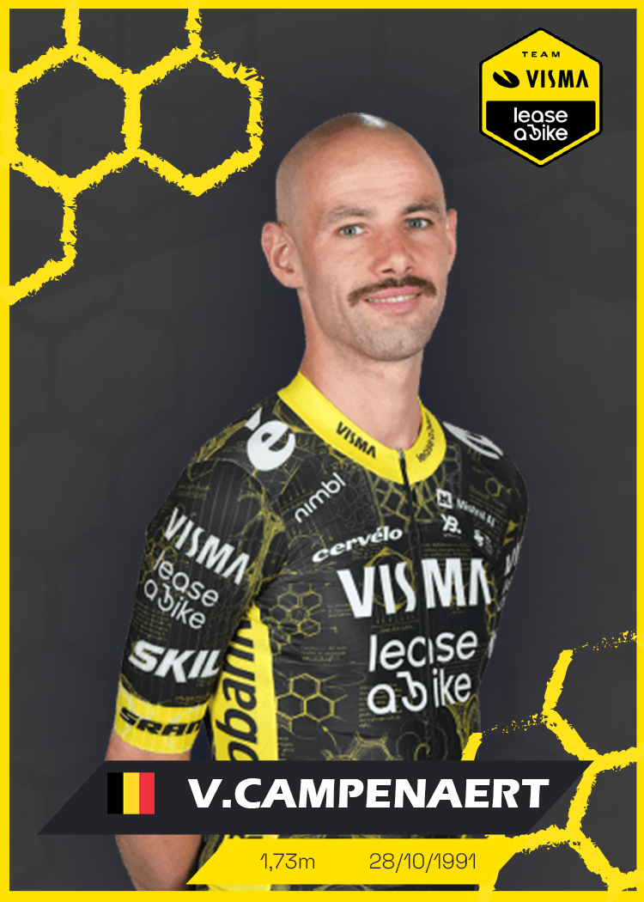

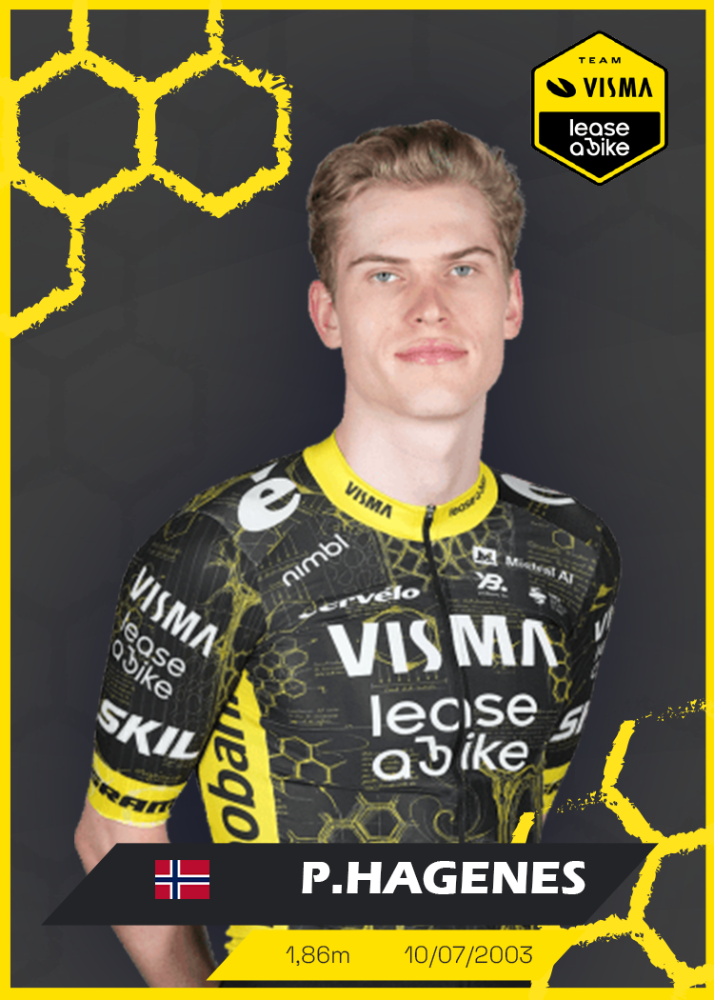
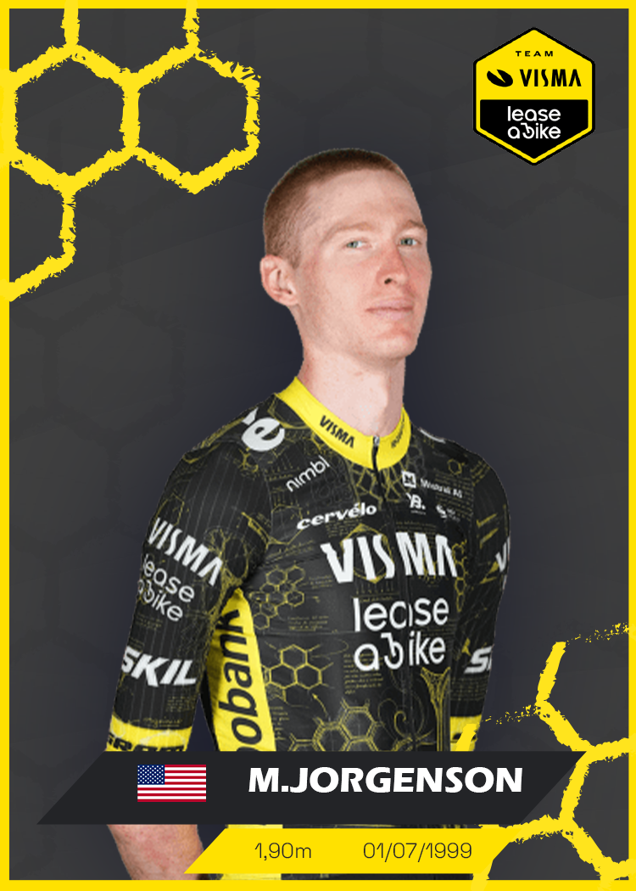
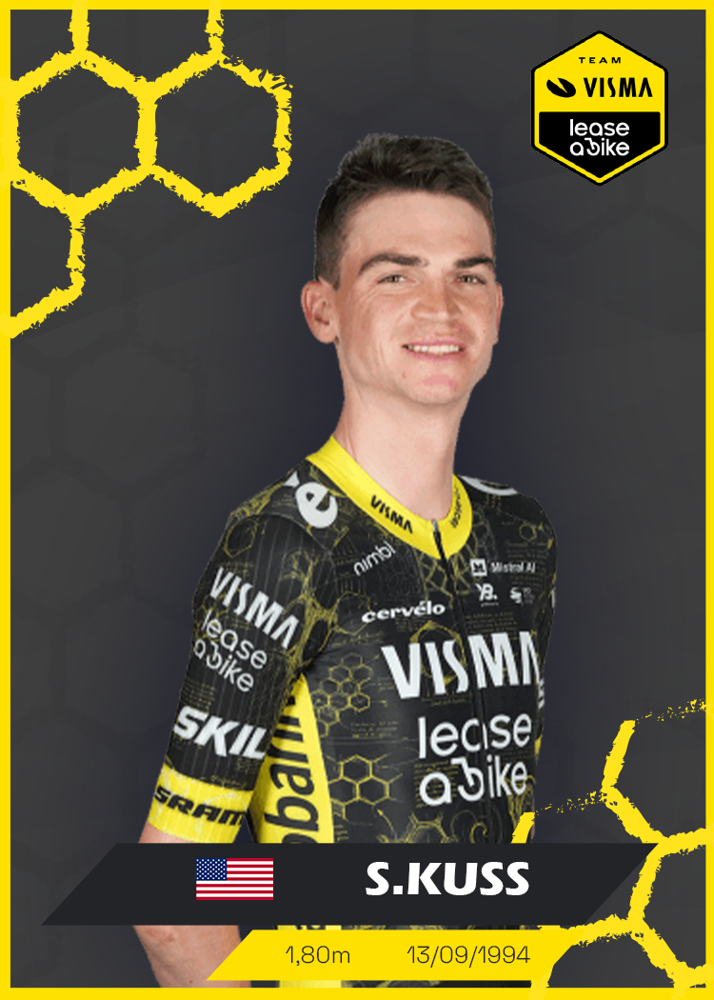
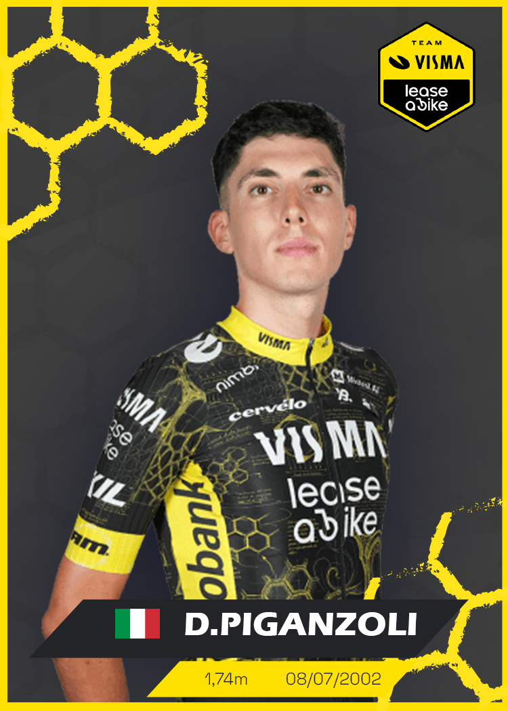